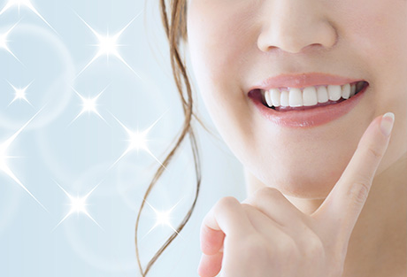
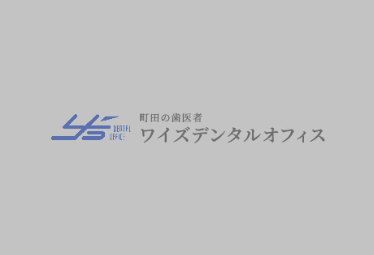

キレイな歯並びを手に入れましょう
歯並びが悪くても、「見た目さえがまんすればいい」と思われている方がいらっしゃいます。しかし歯並び・咬み合わせの乱れはお口や全身にも悪影響を及ぼすため、軽視してはいけません。
町田市の歯医者「ワイズデンタルオフィス」では、お子様から大人の方までの矯正治療を行っています。歯並び・嚙み合わせについては、お気軽に当院までご相談ください。
正しい歯並び・咬み合わせで健康に
「出っ歯」「受け口」「すきっ歯」など、歯並びについてお悩みではありませんか？ 悪い歯並び・咬み合わせは、お口の中はもちろん、全身や心にまで影響することがあります。心と体の健康を手に入れるために矯正治療を検討しましょう。
歯並びの乱れによる悪影響について
歯並びの乱れは、見た目以外にもさまざまな悪影響を及ぼします。
- その1
精神面への影響 - 口元の見た目が気になってコンプレックスが生じ、内向的な性格になってしまうことがあります。
- その3
一部の歯に負担をかける - 咬み合わせの乱れによって一部の歯に過度の負担がかかり、歯を失う原因になることがあります。
- その4
胃腸に負担をかける - 正しく咀嚼（そしゃく）できないため丸飲みしがちになり、胃腸に負担をかけます。また栄養の吸収を妨げてしまいます。
- その5
発音に支障が出る - 舌の位置や息の漏れ方が定まらず、正しく発音できないことがあります。
- その6
全身トラブルを招く - 咬み合わせが悪いために顎に過度な力がかかると、顎関節症や肩こり、頭痛などの原因になることがあります。
矯正専門ではないからこその強み
矯正治療は、矯正だけを専門に行う歯科医院と、当院のように幅広い診療メニューに対応する一般歯科医院のどちらでも受けることが可能です。患者様の中には、「矯正治療は専門の医院で受けたほうがいいのでは？」を思われる方もいるかもしれません。
確かに、専門の医院は矯正治療についての知識や実績が豊富であるなどのメリットがあるでしょう。しかし、実は一般歯科医院だからこその強みもあるのです。
強み01 外科処置を含めた矯正治療が可能
- 
- 当院で矯正治療を担当するのは、歯周外科治療やインプラント治療などの外科処置を担当する院長です。そのため歯並びのきれいさだけでなく、お口全体をふまえて根本的に歯を守るための矯正治療が可能です。
強み02 矯正治療と併せて歯周病の管理ができる
-
成人の矯正治療の場合、効果を得るには同時に歯周病の管理が欠かせません。そこで当院ではブラッシング指導だけでなく、必要に応じて歯周ポケットの深さを測る「プロービング」やX線写真撮影などによる歯周病検査を行います。
加えて歯周病の初期治療である、歯周ポケット内の歯石除去や歯根面の滑沢化などにも対応。大人の方にも矯正治療を安心して受けていただけます。
強み03 お子様のむし歯予防への注力
-
矯正治療中はお口の中に装置があることで汚れが溜まりがちになり、むし歯になりやすくなります。そこで当院では、とくに学童期のお子様に対してむし歯予防に力を入れています。
必要に応じて、お口の中の細菌を調べて一人ひとりのむし歯リスクを調べる「カリエスリスク診断を実施します。自分に合った予防を可能にするほか、フッ素塗布などによる予防処置も行っています。
強み04 ご来院ごとにクリーニングを実施
-
当院ではご来院のたびに、歯科衛生士によるPMTC（歯科の専門家が専用の器具を使って行う歯のクリーニング）を行っています。また必要に応じ、歯周ポケット内の歯石を除去する「スケーリング」も実施します。
このようにお口の中をよい状態に維持しながら矯正治療を進めていけるのは、一般歯科医院ならではの強みだといえるでしょう。
症状別治療ガイド
歯並びの状態や年齢によって、矯正治療方法は異なります。こちらでは歯並びの症状や大人・子供別に、適した治療法をご紹介します。
前歯が出ている～出っ歯～
-
上の前歯、あるいは上の歯列全体が前に突き出している状態です。上下の顎のバランスが悪いことで起こるとされています。
見た目が気になるだけでなく、しゃべりにくかったり、転んだときに前歯や口元をケガしやすかったりするなどの問題があります。
- 子供の治療について
- 成長期にあるお子様の場合には、上下の顎の成長をコントロールすることで、出っ歯を改善できます。適したタイミングに治療を開始できるよう、お早めにご相談ください。
- 大人の治療について
- 顎の成長が完了しているため、場合によっては抜歯をしてスペースをつくり、正しい歯並びに誘導していきます。また上下の前歯が強く当たる場合には、咬み合わせを整える治療が必要です。
下の歯列が出ている～受け口～
- 上の歯列よりも下の歯列が、前に突き出している状態です。「しゃくれ」とも呼ばれ、出っ歯と同じく上下の顎のバランスが悪いことで起こるとされています。
- 子供の治療について
- 小さなお子様であれば、生え替わりによって受け口が改善されるケースもあります。なるべく早く治療に取り組むことで早期の改善につながります。
- 大人の治療について
- 大人の方でも、手術することなく治療できるケースも少なくありません。親知らずを抜いたり、下の小臼歯を抜いたりするなどしてスペースをつくり、歯を正しく並べていきます。
ガタガタの歯並び～乱杭歯（らんぐいば）～
- 歯が重なり合って生えている状態です。「叢生（そうせい）」とも呼ばれ、やわらかい食べ物が増えて咬む回数が減り、顎の骨が小さくなったことで起こるとされています。八重歯もこの一種です。
- 子供の治療について
- まだ顎の骨がやわらかい成長期のお子様であれば、顎の骨を少しずつ広げていく拡大装置を使って顎の正しい成長を促すことで、永久歯が正しく並ぶスペースを確保できます。
- 大人の治療について
- 大人の方は顎の骨の成長が完了しているため、歯を何本か抜いてスペースをつくり、歯をきちんと並べていく方法をとります。そのほかにも、歯の表面のエナメル質を少し削ったり、倒れ込んでいる歯を起こしたりするなどの方法もあります。
上下の前歯が閉じない～開咬（かいこう）～

- 奥歯を咬み合わせても、前歯が閉じず開いている状態です。見た目が気になる上に、「食べ物をうまく咬み切れない」「奥歯に力がかかって摩耗する」「顎関節症になりやすい」といった問題があります。
- 子供の治療について
- 歯の間から舌を前に出したり、舌で前歯を常に押していたりするなどの「舌の悪いクセ」があると、開咬を招き、悪化させることがあります。これらのクセの改善をはかったり、顎の成長方向に問題があれば、整形学的な治療法を用いたりすることもあります。
- 大人の治療について
- 大人の方の場合、奥歯が歯ぐきの上に出すぎているために、それがつかい棒になって口が閉じられなくなるケースがあります。そのような場合には、矯正装置や矯正用インプラントを使用して、歯を歯ぐきの中に押し戻して改善を図ります。
症例紹介
○○の症例
|  |
テキストが入ります。テキストが入ります。テキストが入ります。テキストが入ります。テキストが入ります。テキストが入ります。テキストが入ります。テキストが入ります。テキストが入ります。テキストが入ります。テキストが入ります。
| 治療における注意点・リスク | |
|---|---|
| 治療期間 | |
| 治療費用 |
○○の症例
テキストが入ります。テキストが入ります。テキストが入ります。テキストが入ります。テキストが入ります。テキストが入ります。テキストが入ります。テキストが入ります。テキストが入ります。テキストが入ります。テキストが入ります。
| 治療における注意点・リスク | |
|---|---|
| 治療期間 | |
| 治療費用 |
歯列矯正の種類・費用・治療の流れ
むし歯・歯周病にならないために「予防歯科・定期検診」